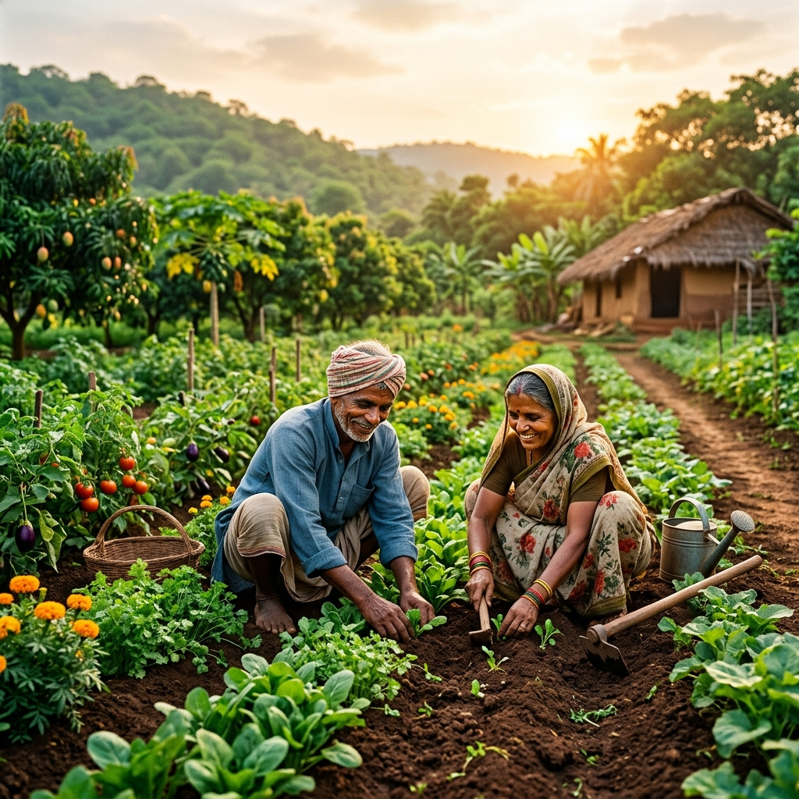

0%
Pesticide Promise
Our Founding Purpose
Why Nature's Nest Exists
In modern agriculture, produce is often harvested prematurely, gassed with ethylene for artificial color, and laced with synthetic systemic pesticides. At Nature's Nest, we reject this entirely.
Our orchards in Gujarat are designed as living ecosystems. We brew our own bio-fertilizers using native cow manure, neem leaves, and jaggery fermentation. Beneficial predator insects manage pests naturally, while precision drip irrigation provides clean groundwater directly to plant roots.
Tree-Ripened Only
Harvested when fully ripe for natural sugar & vitamin peaks
Rainwater Recharging
Groundwater aquifers replenished each monsoon
Heritage & Desi Varieties
Non-GMO native heirloom seeds for rich authentic taste
Same-Day Dispatch
Dispatched within 4 hours of morning harvest